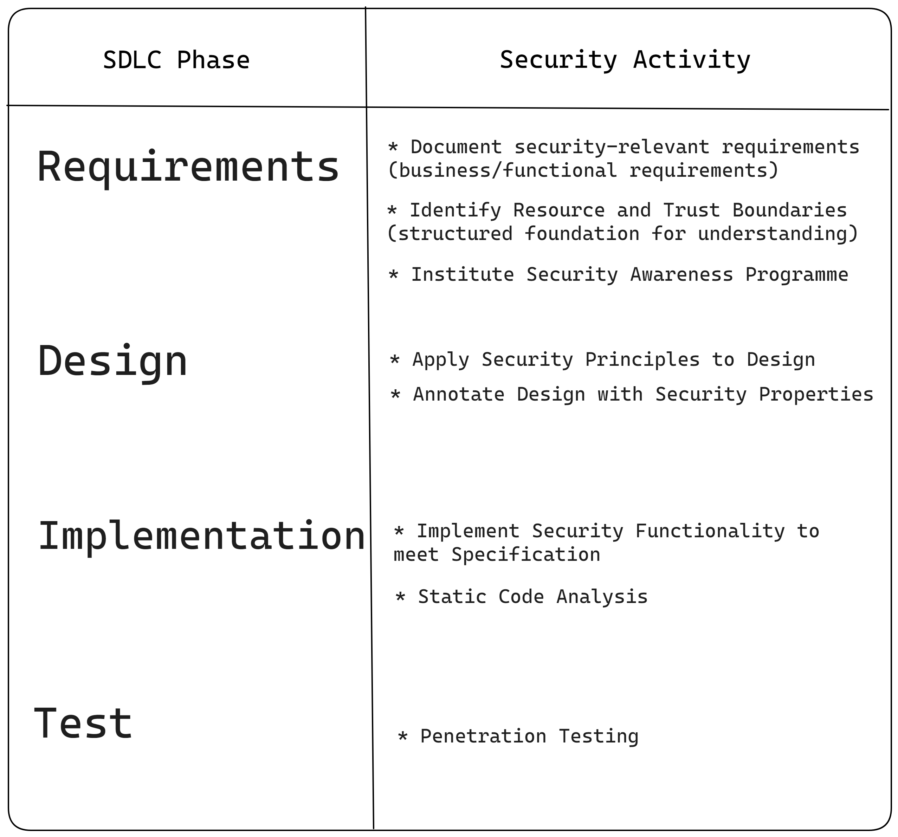
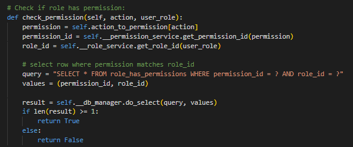

Security Practises
This section is dedicated to material related to security practises..
Activity Frameworks
Examples
- Microsoft. (2023) What are the Microsoft SDL practices. Available from: here. - An outline of Microsoft's Security Development Lifecycle (SDL) set of practises that support security assurance and compliance requirements.
- MITRE. (2005) The CLASP Application Security Process. Available from: here. - The Comprehensive, Lightweight Application Security Process (CLASP) is a an activity based guide to integrating security into the software development lifecycle.
Reflection
Activity frameworks assist with mapping security practises onto a software development lifecycle. Professionally, they enhance our toolkit as a software engineer. Educationally, the strategy-based security-model inherent to an activity framework, can be critically analysed by contrasting it to goal-based security models. For example; security practises can be critically related to CIA goals.
Suprisingly, MITRE doesn't have a database specifically for security practises, but I think it would complement their two databases centred on vulnerabilities, and attack strategies, respectfully. Therefore, if I wanted to build from my course reflections so far, I should look into creating an ontology of security activities as a security research tool.
Mapping Security Practises to SDLC Stages
This was my submission to the a task of mapping security practises to SDLC stages.
Secure Practise Accreditation
Reflection
Third Party accreditation can be used to build trust between two parties. Unfortunately, it's possible for software developers to maliciously or negligently introduce vulnerabilities into software, so it's important to have third party accreditation where possible to back up the claims of secure practises by software developers. In general, I think more people should be made aware of the existence of standards organisations that can provide third party accreditation for secure practises, particularly those that purchase software.
Credible Standards
- ISO/IEC 15408-1:2022 - An overview of the Common Criteria evaluation criteria for IT security. Common Criteria was formed and is maintained by multiple governmental organisations around the world.
Group Project
In this module I was given the task to create secure database software in a group of 4. Here's some of the secure practises and features I integrated during our software implementation phase.
Logging
Parameter Guards
Role-Based Access Control
Clear Code History
Functional Testing
Input Validation
Safety Dialog
Peer Code Reviews
Docstrings and Inline Comments
Each person on our team had seperate roles and my roles was primarily to create an action controller to handle user requested actions, integrate that with security services and the database management system, and test the programmes functionality. To view the project repository, including the other group members contributions, click here.